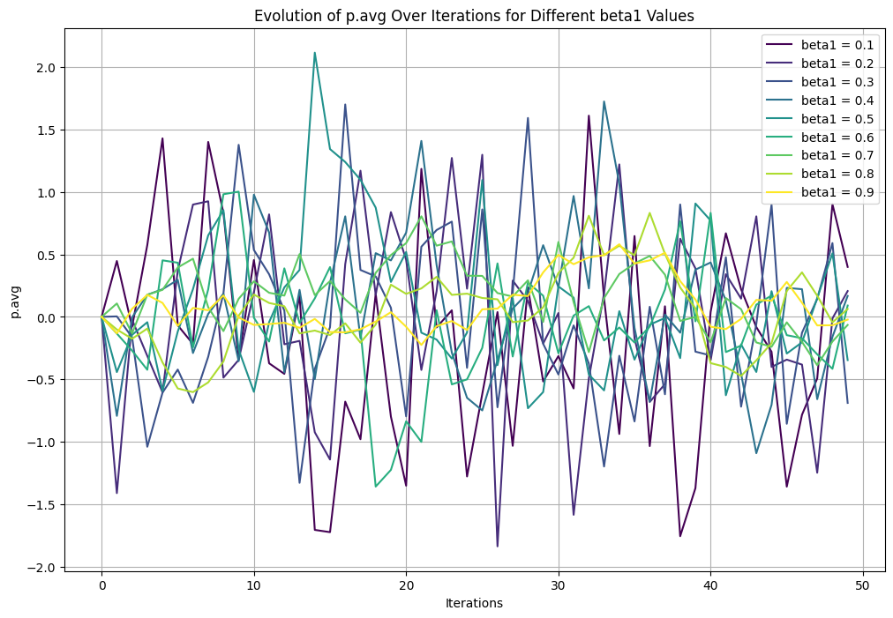
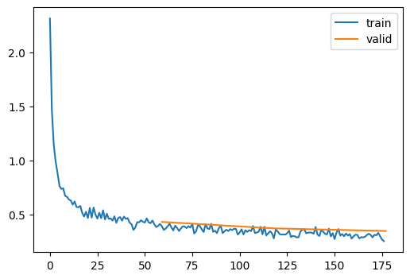

Code
# The aim of this blog is to explain the role of a optimizer in a neural network training loop. I will explain what a neural network is, what a optimizer is and go deeper into maths of a optimizer to gain a more intuative understanding. All the code to run the models and charts are included in this blog post.
A neural network, inspired by the human brain, is a form of machine learning model. The human brain comprises neurons interconnected by synapses, with electrical pulses transmitting information. In a similar manner, a neural network processes input, like reading a book, by activating relevant neurons involved in text interpretation, akin to the thinking process, before producing an output, such as a summary of the text. An artificial neural network (ANN) consists of artificial neurons organized in a specific architecture within a computer. Examples of ANN architectures include Convolutional Neural Networks (CNNs) and Recurrent Neural Networks (RNNs), or a hybrid of these and other layers. For instance, in image processing, the model receives a sequence of pixels (an image) and employs sequential CNNs to generate a corresponding sequence of pixels as an output.
# The aim of this neural network to understand our image training data. For this, our model leverages a Convolutional Neural Network (CNN) architecture, intricately designed through five principal blocks. Each block is a structured sequence of layers, purposefully arranged to process and extract features from the input data.
The architecture culminates with a ‘Flatten’ layer. This crucial layer transforms the 2D output from the convolutional blocks into a 1D vector, essential for subsequent processing or generating the final output.
Throughout this architecture, the convolutional layers systematically compress the image, distilling it into increasingly compact forms. This process enables the model to discern and learn vital features of the image. In the final stage, the model utilizes these learned features to make informed predictions.
An optimizer is a method to update the weights of the neural network to minimize the loss function. A loss function is a measure between the predicted output and the actual output. In simple terms the closer these two are the better the model will perform, you will get what you expect from the model. The weights are updated by using the gradient of the loss function. The gradient is the slope of the loss function. It can be thought of as the direction the weights should be updated. If the gradient is positive then the weights should be increased. If the gradient is negative then the weights should be decreased. If the weights are increased/descreased by too much then the model will over shoot. This pattern can continue forever and not get you closer to your desired result, a smaller loss. The aim of the optimizer is to get to the smallest loss possible in the quickest amount of time or with the least amount of resources.
The aim of this blog is to show how to use the Adam optimizer with annealing learning rate. The Adam optimizer is a stochastic gradient descent method that is based on adaptive estimation of first-order and second-order moments. The Adam optimizer is one of the most popular optimizers used in deep learning. The annealing learning rate is used to prevent the model from overfitting and is also used to speed up the training process.
import os
import sys# checks if the environment is local or remote
def check_if_local():
# Checking for common remote environment indicators
remote_indicators = ['COLAB_GPU', 'JUPYTERHUB_SERVICE_PREFIX']
# If any of the indicators are present, it's likely not a local environment
if any(indicator in os.environ for indicator in remote_indicators):
return False
else:
# Assuming local environment if none of the remote indicators are found
return True# checks if the environment is local or remote and sets the path accordingly
if check_if_local() == False:
print('Running in a remote environment, mounting Google Drive...')
from google.colab import drive
drive.mount('/content/drive')
sys.path.append('/content/drive/MyDrive/Learning/data_science/')
!pip install datasets
!pip install torcheval
else :
print('Running in a local environment...')
sys.path.append('G:\My Drive\Learning\data_science')Running in a remote environment, mounting Google Drive...import os
import sys
import pickle,gzip,math,os,time,shutil,torch,matplotlib as mpl,numpy as np,matplotlib.pyplot as plt
import fastcore.all as fc
from collections.abc import Mapping
from pathlib import Path
from operator import attrgetter,itemgetter
from functools import partial
from copy import copy
from contextlib import contextmanager
import torchvision.transforms.functional as TF,torch.nn.functional as F
from torch import tensor,nn,optim
from torch.utils.data import DataLoader,default_collate
from torch.nn import init
from torch.optim import lr_scheduler
from torcheval.metrics import MulticlassAccuracy
from datasets import load_dataset,load_dataset_builder
from miniai.datasets import *
from miniai.conv import *
from miniai.learner import *
from miniai.activations import *
from miniai.init import *from fastcore.test import test_close
torch.set_printoptions(precision=2, linewidth=140, sci_mode=False)
torch.manual_seed(1)
import logging
logging.disable(logging.WARNING)
set_seed(42)
xl,yl = 'image','label'
name = "fashion_mnist"
dsd = load_dataset(name)
bs = 1024
xmean,xstd = 0.28, 0.35
@inplace
def transformi(b): b[xl] = [(TF.to_tensor(o)-xmean)/xstd for o in b[xl]]
tds = dsd.with_transform(transformi)
dls = DataLoaders.from_dd(tds, bs, num_workers=0)metrics = MetricsCB(accuracy=MulticlassAccuracy())
astats = ActivationStats(fc.risinstance(GeneralRelu))
cbs = [DeviceCB(), metrics, ProgressCB(plot=True), astats]
act_gr = partial(GeneralRelu, leak=0.1, sub=0.4)
iw = partial(init_weights, leaky=0.1)
lrf_cbs = [DeviceCB(), LRFinderCB()]We are using the MiniAI custom trainer class from Fast AI. It enables you to train deep learning neural network models. Its very dynanamic and enables you to add callbacks (custom peices of code) to various parts of the training process. This creates a flexible system where you can add, swap and experiment in a quick, easy and repeatably way. In summary its very flexiable trainer class to enable effective training of neurual networks.
The mini AI learner class takes in :
For the next few trainings runs we will use a varient of the learner class called TrainLeaner, the only difference between Learner and TrainLearner is the Learner expect you you pass the functons listed below as callbacks whereas TrainLearer explicitly adds the following functions to the learner object.
The first step is to create an instance of the TrainLearner class and next step is to call the fit method to start the training. In summary it will:
Somestimes a diagram is better to understand so I’ve included a flow diagram of the learner method when fit is called is shown below.
flowchart TD
A(fit called) --> B[fit]
B -->|Set epochs, opt func, etc.| C[_fit]
C -->|For each epoch| D[one_epoch for Training]
C -->|For each epoch| E[one_epoch for Validation]
D --> F{_one_batch for each batch in Training}
E --> G{_one_batch for each batch in Validation}
F --> H[predict]
G --> H
H --> I[get_loss]
I -->|If Training| J[backward]
I -->|If Validation| K(End of batch processing)
J --> L[step]
L --> M[zero_grad]
M --> K
subgraph SGD Optimizer
L -->|opt_step| N(Update params with lr and gradient)
L -->|reg_step| O(Update params with weight decay)
M --> P(Reset gradients)
end
subgraph TrainLearner Methods
H --> Q(Predict: Model forward pass)
I --> R(Calculate Loss)
J --> S(Backward: Compute gradient)
L --> T(Step: Update weights)
M --> U(Zero_grad: Clear gradients)
end
The learner class is shown
# The learner class expects the following fucntions to be passed as a callback : predict, get_loss, backward, step, zero_grad.
class Learner():
def __init__(self, model, dls=(0,), loss_func=F.mse_loss, lr=0.1, cbs=None, opt_func=optim.SGD):
cbs = fc.L(cbs)
fc.store_attr()
@with_cbs('batch')
def _one_batch(self):
self.predict()
self.callback('after_predict')
self.get_loss()
self.callback('after_loss')
if self.training:
self.backward()
self.callback('after_backward')
self.step()
self.callback('after_step')
self.zero_grad()
@with_cbs('epoch')
def _one_epoch(self):
for self.iter,self.batch in enumerate(self.dl): self._one_batch()
def one_epoch(self, training):
self.model.train(training)
self.dl = self.dls.train if training else self.dls.valid
self._one_epoch()
@with_cbs('fit')
def _fit(self, train, valid):
for self.epoch in self.epochs:
if train: self.one_epoch(True)
if valid: torch.no_grad()(self.one_epoch)(False)
def fit(self, n_epochs=1, train=True, valid=True, cbs=None, lr=None):
cbs = fc.L(cbs)
# `add_cb` and `rm_cb` were added in lesson 18
for cb in cbs: self.cbs.append(cb)
try:
self.n_epochs = n_epochs
self.epochs = range(n_epochs)
if lr is None: lr = self.lr
if self.opt_func: self.opt = self.opt_func(self.model.parameters(), lr)
self._fit(train, valid)
finally:
for cb in cbs: self.cbs.remove(cb)
def __getattr__(self, name):
if name in ('predict','get_loss','backward','step','zero_grad'): return partial(self.callback, name)
raise AttributeError(name)
def callback(self, method_nm): run_cbs(self.cbs, method_nm, self)
@property
def training(self): return self.model.training# The Trainer class inherits all the classes from Leaner but explicitly adds
# predict, get_loss, backward, step, zero_grad classes functions
class TrainLearner(Learner):
def predict(self): self.preds = self.model(self.batch[0])
def get_loss(self): self.loss = self.loss_func(self.preds, self.batch[1])
def backward(self): self.loss.backward()
def step(self): self.opt.step()
def zero_grad(self): self.opt.zero_grad()We will start of with one of the simplest optimizers and build up, taking in the results and how they improve as we introduce more sophisticated optimisers. We will cover SGD, Adam, Adam with Automatic Annealer, and then introduce Adam with Automatic Annealing as a call back. Abit about each of the optimizers:
SGD is a simple optimizer that takes in the learning rate and the model parameters and updates the model parameters every time a backwards pass (every epoch) by subtracting the learning rate multiplied by the gradient of the loss function. Its beauty is that its a simple optimizer that only takes in learning rate making it low resource and simple to understand. The learning rate is a hyperparameter that needs to be tuned to get the best results. If the learning rate is too high then the model will overshoot and not get to the minimum loss. If the learning rate is too low then the model will take a long time to get to the minimum loss. The learning rate is a constant and does not change during the training process.
Adam is a stochastic gradient descent method that is based on adaptive estimation of first-order and second-order moments. It is one of the most popular optimizers used in deep learning. It is a adaptive learning rate optimizer that uses the first and second moments of the gradient to update the model parameters. The first moment is the mean of the gradient and the second moment is the uncentered variance of the gradient. The first moment is used to calculate the direction of the gradient and the second moment is used to calculate the size of the gradient. The Adam optimizer has three hyperparameters that need to be tuned to get the best results. The first hyperparameter is the learning rate. The second hyperparameter is the beta1 which is the exponential decay rate for the first moment. The third hyperparameter is the beta2 which is the exponential decay rate for the second moment. The learning rate is a constant and does not change during the training process. The beta1 and beta2 are constants and do not change during the training process. Adam is more resource intensive than SGD as it needs to keep a copy of the beta1 parameters and beta2 parameters in memory and also has more operations to calculate the results.
Adam with Automatic Annealing is a Adam optimizer that uses a learning rate that changes during the training process. The learning rate is a hyperparameter that needs to be tuned to get the best results. If the learning rate is too high then the model will overshoot and not get to the minimum loss. If the learning rate is too low then the model will take a long time to get to the minimum loss. The learning rate is a constant and does not change during the training process.
The SGD optimizer class is a simple class that takes in params, learning rate (lr), and weight decay. It has 4 functions :
The key function we’re intersted in relating to TrainLearner is :
The step function which calls opt_step (updates the parameters from the learning rate) reg_step isnt used (updates parameters from the weight decay if given).
Zero_grad is called after every batch to zero the gradients, by default in pytorch they acculmtate which isnt desired.
# SGD optimizer is a type of gradient descent optimizer. It is a first order optimizer (only uses the first derivative)
# It is a stochastic optimizer (it uses a random sample of the data to calculate the gradient)
class SGD:
def __init__(self, params, lr, wd=0.):
"""
Initializes the SGD optimizer.
Args:
params (iterable): Iterable of parameters to optimize.
lr (float): Learning rate.
wd (float, optional): Weight decay (default: 0).
"""
params = list(params)
fc.store_attr()
self.i = 0
# calculates the parameters and weight decays. Step occurs after the backward pass (when the gradients are calculated)
def step(self):
# calls torch.no_grad() to disable gradient tracking
with torch.no_grad():
# iterates over the parameters
for p in self.params:
self.reg_step(p)
self.opt_step(p)
self.i +=1
# Updates the parameters using the gradient and the learning rate
def opt_step(self, p): p -= p.grad * self.lr
# Calculates the weight decay and updates the parameters
# The purpose of weight decay is to prevent overfitting. It is calculated by multiplying the learning rate by the weight decay
# essentially it is a penalty for having large weights (it reduces the value of the weights)
def reg_step(self, p):
if self.wd != 0: p *= 1 - self.lr*self.wd
# Zeros out the gradient for all parameters. This is useful because the gradients are accumulated by default (useful for RNNs)
def zero_grad(self):
for p in self.params: p.grad.data.zero_()set_seed(42) # sets the seed for reproducibility
model = get_model(act_gr, norm=nn.BatchNorm2d).apply(iw) # gets the model and applies the init_weights function
# creates the learner object and passes the model, dataloaders (the data), loss function, learning rate,
# callbacks and optimizer function
learn = TrainLearner(model, dls, F.cross_entropy, lr=6e-3, cbs=cbs, opt_func=SGD)
learn.fit(3) # fits the model for 3 epochs| accuracy | loss | epoch | train |
|---|---|---|---|
| 0.396 | 1.808 | 0 | train |
| 0.558 | 1.467 | 0 | eval |
| 0.611 | 1.304 | 1 | train |
| 0.644 | 1.179 | 1 | eval |
| 0.672 | 1.093 | 2 | train |
| 0.688 | 1.029 | 2 | eval |
Adam optimizer (also known as Adaptive Moment Estimation) is a stochastic gradient descent method that is based on adaptive estimation of first-order and second-order moments. It’s a combination of RMSprop and Momentum and commonly used in deep learning. It’s a little more complex than the SGD discussed above. There are some learning utilities and also numbered code explanations to help understand the code further.
For a deeper dive deeper, the following resources are good references.
The Adam optimizer below inherits all the code from SGD and replaces opt_step with new code to update the parameters. The important variables opt_step takes in for our case are :
A intuative way to think about beta1 (“momentum_decay_rate”) and beta2 (“variance_decay_rate”) is :
The reason for this will be become clearer as i explain later on.
class Adam(SGD):
def __init__(self, params, lr, wd=0., beta1=0.9, beta2=0.99, eps=1e-5):
super().__init__(params, lr=lr, wd=wd)
self.beta1,self.beta2,self.eps = beta1,beta2,eps
def opt_step(self, p):
1 if not hasattr(p, 'avg'): p.avg = torch.zeros_like(p.grad.data)
2 if not hasattr(p, 'sqr_avg'): p.sqr_avg = torch.zeros_like(p.grad.data)
# Beta 1 calculations
3 p.avg = self.beta1*p.avg + (1-self.beta1)*p.grad
4 unbias_avg = p.avg / (1 - (self.beta1**(self.i+1)))
# Beta 2 calculations
5 p.sqr_avg = self.beta2*p.sqr_avg + (1-self.beta2)*(p.grad**2)
6 unbias_sqr_avg = p.sqr_avg / (1 - (self.beta2**(self.i+1)))
# Combination of beta1 and beta2 combinations
7 p -= self.lr * unbias_avg / (unbias_sqr_avg + self.eps).sqrt()I wanted to dive a bit deeper into the maths, it didnt make intuative sense until I started to plot the results in various ways. The 2 charts below really helped me understand whats going on. As mentioned below, I’ve kept hearing that you can think of the first moment as a compass and the second moment as a distance to travel but i didnt understand what it meant, hopefully you understand after you have read this.
Note, the 2 illistrates below are using randomized data to illistrate points
The chart below shows the calculations for beta1 and beta2 in a flow chart style which shows that beta1 and beta 2 are really calculated in pararel until they are combined in item 7 mentioned above.
graph TD
A[beta calculations]
A --> D1[Beta 1 - the compass]
D1 --> E1["p.avg = self.beta1*p.avg + (1-self.beta1)*p.grad"]
E1 --> F1["unbias_avg = p.avg / (1 - (self.beta1**(self.i+1)))"]
F1 --> G[End of Parallel Calculations]
A --> D2[Beta 2 - The distance to travel]
D2 --> E2["p.sqr_avg = self.beta2*p.sqr_avg + (1-self.beta2)*(p.grad**2)"]
E2 --> F2["unbias_sqr_avg = p.sqr_avg / (1 - (self.beta2**(self.i+1)))"]
F2 --> G
G --> H[Combine of Beta 1 and Beta 2 along with learning rate and self.eps to prevent divide by zero errors]
H --> I["p -= self.lr * unbias_avg / (unbias_sqr_avg + self.eps).sqrt()"]
I --> J[Update Parameter p]
J --> K[End]
The first momentum (the compass) tells you the direction which is either negative or posotive, do you want to negativly update the paremeters or positivly.
I’ve plotted beta1 results from 0.1 to 0.9 with the lower betas more swayed to the most recent calculated gradients (aka the most recent backward pass) to and ligher colours plotted to more to the older averaged gradients (historical gradients).
- The darker colours (lower beta1) swing more wildley going from negative to positve from itteration to itteration. - The lighter colours (higher beta1) have a much smoother line and stay positive or negative for more itterations.
There’s 2 important take aways.
# Setting up an updated simulation with a wider range of beta1 values
iterations = 50
# New range of beta1 values
beta1_values = np.arange(0.1, 1.0, 0.1)
# Initialize a dictionary to store p.avg values for each beta1 across iterations
p_avg_values = {beta1: [0] for beta1 in beta1_values} # Start with 0
# Simulate p.avg updates over iterations
for beta1 in beta1_values:
for i in range(1, iterations):
# Simulate a random gradient at each step
p_grad = np.random.randn()
# Update p.avg using the formula: beta1*p.avg + (1-beta1)*p.grad
new_p_avg = beta1 * p_avg_values[beta1][-1] + (1 - beta1) * p_grad
p_avg_values[beta1].append(new_p_avg)
# Plotting with relevant colors
plt.figure(figsize=(12, 8))
# Generate a color map to assign a unique color to each beta1 value
colors = plt.cm.viridis(np.linspace(0, 1, len(beta1_values)))
for beta1, color in zip(beta1_values, colors):
plt.plot(p_avg_values[beta1], label=f'beta1 = {beta1:.1f}', color=color)
plt.xlabel('Iterations')
plt.ylabel('p.avg')
plt.title('Evolution of p.avg Over Iterations for Different beta1 Values')
plt.legend()
plt.grid(True)
plt.show()
The second momentum (the distance to travel) tells you the distance, that is how much to change the parameters and only the distance, not the direction (Beta2 is always positive).
To get to this result:
We first square the gradients which will turn the results positive, this has the effect of making any large number that is either negative or positive into a even larger positive number. Smaller numbers that are either negative or positive will also become positive but to a lesser degree.
Then we will square root the previously squared number to scaled the number down.
The graphs below dispicts the operations mentioned above visually. - The left chart shows how squaring (Green) the results increases the magnitude positively
- The right chart shows how smooth the line looks when square rooting (blue) the previously squared values.
- The original gradients (marked in red) jump up and down over time over epochs (iterations).
The blue line shows a steady path (line in this case) to minimize the loss is key to getting to a loss function in the most predictable way. If you was to measure the red line, it would be much shorter than the blue (the gradient).
import matplotlib.pyplot as plt
import numpy as np
# Simulate some gradients
np.random.seed(0)
gradients = np.random.randn(100) # Random gradients for simulation
# Compute squared gradients
squared_gradients = gradients**2
# Compute square root of the average of squared gradients (simulating the second moment in Adam)
sqrt_avg_squared_gradients = np.sqrt(np.cumsum(squared_gradients) / np.arange(1, 101))
# Plotting
plt.figure(figsize=(12, 6))
# Updating the plot with distinct colors for each curve
# Plotting with distinct colors
plt.figure(figsize=(12, 6))
# Plot for Gradients and Squared Gradients
plt.subplot(1, 2, 1)
plt.plot(gradients, label='Gradients', color='blue')
plt.plot(squared_gradients, label='Squared Gradients', color='green')
plt.title('Gradients and Squared Gradients')
plt.xlabel('Time Steps')
plt.ylabel('Magnitude')
plt.legend()
# Plot for Gradients and Square Root of Avg of Squared Gradients
plt.subplot(1, 2, 2)
plt.plot(gradients, label='Gradients', color='blue', alpha=0.7)
plt.plot(sqrt_avg_squared_gradients, label='Sqrt of Avg of Squared Gradients', color='red')
plt.title('Gradients and Sqrt of Avg of Squared Gradients Over Time')
plt.xlabel('Time Steps')
plt.ylabel('Magnitude')
plt.legend()
plt.tight_layout()
plt.show()<Figure size 1200x600 with 0 Axes>Now bringing the compass aka direction (aka BETA1) and distance (aka BETA2) together.
The way I like to think of it, is we have the compass being positve or negative and we divide by the distance which is always positve. So the compass will either be pointing up or down at different magnatudes and the distance will either be long (a high number) or short (a low number).
# first run with adam as the optimizer
set_seed(42) # sets the seed for reproducibility
model = get_model(act_gr, norm=nn.BatchNorm2d).apply(iw) # gets the model and applies the init_weights function
# creates the learner object and passes the model, dataloaders (the data), loss function, learning rate,
# callbacks and optimizer function
learn = TrainLearner(model, dls, F.cross_entropy, lr=6e-3, cbs=cbs, opt_func=Adam)
learn.fit(3) # fits the model for 3 epochs| accuracy | loss | epoch | train |
|---|---|---|---|
| 0.796 | 0.574 | 0 | train |
| 0.843 | 0.433 | 0 | eval |
| 0.868 | 0.363 | 1 | train |
| 0.867 | 0.373 | 1 | eval |
| 0.884 | 0.318 | 2 | train |
| 0.875 | 0.349 | 2 | eval |

Adam optimizer (also known as Adaptive Moment Estimation) with annealing is the same as vanlila Adam (i.e. adaptive estimation of first-order and second-order moments). However it also has a extra parameter named Annealing_rate.
This is a simplified annealing rate that reduces the learning rate each time step method is called (inherited from SGD). The only change is in opt_step and that is the line below and includes the annealing rate. This will reduce the learning rate each time opt_step is called. The idea being that at the beginning of the training we want to update the weights more to get to a loss reduced quicker as there is a lot more learning to do. However, the longer training process is running, there is a less learning to do and its more about fine tuning weights to get slight improvements to the loss.
Instead of updating the paremeters with the learning rate, it now uses annealed_lr as shown below.
# Run with adam with annealing as the optimizer
class AdamWithAnnealing(SGD):
def __init__(self, params, lr, wd=0., beta1=0.9, beta2=0.99, eps=1e-5, anneal_rate=0.97):
super().__init__(params, lr=lr, wd=wd)
self.beta1, self.beta2, self.eps = beta1, beta2, eps
self.anneal_rate = anneal_rate
def opt_step(self, p):
if not hasattr(p, 'avg'): p.avg = torch.zeros_like(p.grad.data)
if not hasattr(p, 'sqr_avg'): p.sqr_avg = torch.zeros_like(p.grad.data)
# Update averages
p.avg = self.beta1 * p.avg + (1 - self.beta1) * p.grad
unbias_avg = p.avg / (1 - (self.beta1**(self.i + 1)))
p.sqr_avg = self.beta2 * p.sqr_avg + (1 - self.beta2) * (p.grad**2)
unbias_sqr_avg = p.sqr_avg / (1 - (self.beta2**(self.i + 1)))
# Apply annealing to learning rate
annealed_lr = self.lr * (self.anneal_rate ** self.i)
# Update parameters
p -= annealed_lr * unbias_avg / (unbias_sqr_avg.sqrt() + self.eps)metrics = MetricsCB(accuracy=MulticlassAccuracy())
astats = ActivationStats(fc.risinstance(GeneralRelu))
cbs = [DeviceCB(), metrics, ProgressCB(plot=True), astats]
act_gr = partial(GeneralRelu, leak=0.1, sub=0.4)
iw = partial(init_weights, leaky=0.1)
lrf_cbs = [DeviceCB(), LRFinderCB()]set_seed(42) # sets the seed for reproducibility
model = get_model(act_gr, norm=nn.BatchNorm2d).apply(iw) # gets the model and applies the init_weights function
# creates the learner object and passes the model, dataloaders (the data), loss function, learning rate,
# callbacks and optimizer function
learn = TrainLearner(model, dls, F.cross_entropy, lr=6e-3, cbs=cbs, opt_func=AdamWithAnnealing)
learn.fit(3) # fits the model for 3 epochs| accuracy | loss | epoch | train |
|---|---|---|---|
| 0.793 | 0.580 | 0 | train |
| 0.835 | 0.452 | 0 | eval |
| 0.854 | 0.406 | 1 | train |
| 0.845 | 0.430 | 1 | eval |
| 0.859 | 0.392 | 2 | train |
| 0.846 | 0.427 | 2 | eval |

To demostrate SGD and then Adam with annealing. I will again start of the simplest of optimizers, the SGD optimizer and repeat the process on the Adam with annealing.
Instead of passing the annealing as a class, we will create a call back. We will create a callbackclass from TrainCB which has the following methods:
We will be replacing step, and adding opt_step and reg_step. The step function is called after the backward function and before the zero_grad function. The step function is used to update the model parameters. The opt_step function is used to update the model parameters from the learning rate. The reg_step function is used to update the model parameters from the weight decay if given. The zero_grad function is used to zero the gradients.
A callback is a way to inject code into MiniAI without changing the core learner class. This seamed counter intuative to me, but once i understood how it helped keep structure of your learner and at the same time increases the flexibility, repeatability and code re-use for each of the different training runs required. Its a simple proces, The first thing is to create a callback class. as below with order. The order will tell you when each of the calls backs will run, higher priority require lower numbers.
class Callback(): order = 0TrainCB creates the familiar learner functions mentioned above
class TrainCB(Callback):
def __init__(self, n_inp=1): self.n_inp = n_inp
def predict(self, learn): learn.preds = learn.model(*learn.batch[:self.n_inp])
def get_loss(self, learn): learn.loss = learn.loss_func(learn.preds, *learn.batch[self.n_inp:])
def backward(self, learn): learn.loss.backward()
def step(self, learn): learn.opt.step()
def zero_grad(self, learn): learn.opt.zero_grad()The key function we’re interested in relating to TrainLearner is the step function which calls opt_step (updates the parameters from the learning rate), reg_step isn’t used (updates parameters from the weight decay if given).
class SGDCallback_TrainCB(TrainCB):
def __init__(self, lr, wd=0., n_inp=1):
self.n_inp = n_inp
fc.store_attr()
self.i = 0
# calculates the parameters and weight decays. Step occurs after the backward pass (when the gradients are calculated)
def step(self, learn):
# calls torch.no_grad() to disable gradient tracking
with torch.no_grad():
# iterates over the parameters
for p in learn.model.parameters():
self.reg_step(p)
self.opt_step(p)
self.i +=1
# Updates the parameters using the gradient and the learning rate
def opt_step(self, p): p -= p.grad * self.lr
# Calculates the weight decay and updates the parameters
# The purpose of weight decay is to prevent overfitting. It is calculated by multiplying the learning rate by the weight decay
# essentially it is a penalty for having large weights (it reduces the value of the weights)
def reg_step(self, p):
if self.wd != 0: p *= 1 - self.lr*self.wd
def zero_grad(self, learn): learn.opt.zero_grad()# SGDCallback_TrainCB added to callbacks and no optimizer function passed
metrics = MetricsCB(accuracy=MulticlassAccuracy())
astats = ActivationStats(fc.risinstance(GeneralRelu))
cbs = [DeviceCB(), metrics, ProgressCB(plot=True), astats, SGDCallback_TrainCB(lr=6e-3)]
act_gr = partial(GeneralRelu, leak=0.1, sub=0.4)
iw = partial(init_weights, leaky=0.1)# Training with SGD as the optimizer
set_seed(42)
model = get_model(act_gr, norm=nn.BatchNorm2d).apply(iw)
learn = Learner(model, dls, F.cross_entropy, cbs=cbs)
learn.fit(3)| accuracy | loss | epoch | train |
|---|---|---|---|
| 0.396 | 1.808 | 0 | train |
| 0.558 | 1.467 | 0 | eval |
| 0.611 | 1.304 | 1 | train |
| 0.644 | 1.179 | 1 | eval |
| 0.672 | 1.093 | 2 | train |
| 0.688 | 1.029 | 2 | eval |

class AdamWithAnnealingCallback(TrainCB):
def __init__(self, lr, wd=0., beta1=0.9, beta2=0.99, eps=1e-5, anneal_rate=0.97, n_inp=1):
self.lr, self.wd, self.beta1, self.beta2, self.eps = lr, wd, beta1, beta2, eps
self.anneal_rate = anneal_rate
self.n_inp = n_inp
self.i = 0
def step(self, learn):
# calls torch.no_grad() to disable gradient tracking
with torch.no_grad():
# iterates over the parameters
for p in learn.model.parameters():
self.reg_step(p)
self.opt_step(p)
self.i +=1
def reg_step(self, p):
if self.wd != 0: p *= 1 - self.lr*self.wd
def opt_step(self, p):
if not hasattr(p, 'avg'): # Checks avg tensor doesnt exist in p
p.avg = torch.zeros_like(p.grad.data) # creates a matching size tensor of all parameters to store averages, they will all be zeros.
if not hasattr(p, 'sqr_avg'): # checks sqr_avg doesnt exist in p
p.sqr_avg = torch.zeros_like(p.grad.data) # creates a matching sized tensor of all parameters to store sqr averages, they will all be zeros.
# A break down on the formulas for the Adam Optimizer
# p.avg is to store the averages, it can be thought of as a balance between the old gradients and the new gradiants
# Beta is set between 1 or 0, when its closer to 1 it takes more of the historical gradients into account and when close to 0, it takes the new gradients into account.
# When its closer to 1, it will be a smoother path and when its zero it will respond to changes in gradients much quicker and appear more erratic.
# Note, on the first run the calculation of p.avg is solely based on the latter part of the equation "(1 - self.beta1) * p.grad".
# The first part of the equation "self.beta1 * p.avg" is zero meaning due to p.avg being set to zeros in the line "p.avg = torch.zeros_like(p.grad.data)".
# The next time opt_step is called, The first part of the equation will influence the result "self.beta1 * p.avg".
p.avg = self.beta1 * p.avg + (1 - self.beta1) * p.grad
# Unbias_avg purpose is to correct p.avg for the first few times called. Remember that in the previous step, the p.avg is zero so isnt included in the calculations.
# The unbias will is more significant for the early iterations and gradually becomes less significant for later iterations.
unbias_avg = p.avg / (1 - (self.beta1**(self.i + 1)))
# Squaring the gradients (p.grad**2) emphasizes larger gradients and diminishes the impact of smaller ones.
p.sqr_avg = self.beta2 * p.sqr_avg + (1 - self.beta2) * (p.grad**2)
# unbias_sqr_avg purpose is to correct p.sqr_avg for the first few times called. Remember that in the previous step, the p.sqr_avg is zero so isnt included in the calculations.
# The unbias will is more significant for the early iterations and gradually becomes less significant for later iterations.
unbias_sqr_avg = p.sqr_avg / (1 - (self.beta2**(self.i + 1)))
# reduces the learning rate with each run by the annealing rate
annealed_lr = self.lr * (self.anneal_rate ** self.i)
# Update parameters
p -= annealed_lr * unbias_avg / (unbias_sqr_avg.sqrt() + self.eps)
# Calculates the weight decay and updates the parameters
# The purpose of weight decay is to prevent overfitting. It is calculated by multiplying the learning rate by the weight decay
# essentially it is a penalty for having large weights (it reduces the value of the weights)
def zero_grad(self, learn): learn.opt.zero_grad()metrics = MetricsCB(accuracy=MulticlassAccuracy())
astats = ActivationStats(fc.risinstance(GeneralRelu))
cbs = [DeviceCB(), metrics, ProgressCB(plot=True), astats, AdamWithAnnealingCallback(lr=6e-3)]
act_gr = partial(GeneralRelu, leak=0.1, sub=0.4)
iw = partial(init_weights, leaky=0.1)# Training with SGD as the optimizer
set_seed(42)
model = get_model(act_gr, norm=nn.BatchNorm2d).apply(iw)
learn = Learner(model, dls, F.cross_entropy, cbs=cbs)
learn.fit(3)| accuracy | loss | epoch | train |
|---|---|---|---|
| 0.793 | 0.580 | 0 | train |
| 0.835 | 0.452 | 0 | eval |
| 0.854 | 0.406 | 1 | train |
| 0.845 | 0.430 | 1 | eval |
| 0.859 | 0.392 | 2 | train |
| 0.846 | 0.427 | 2 | eval |
The method above is done by Step Decay. The learning rate is reduced by after each epoch. Its probably the simplest method but there are others as stated below:
Time-Based Decay: The learning rate decreases over time linearly or using a similar function. It’s simple and effective, especially for problems where the rate of improvement slows down over time.
Exponential Decay: The learning rate decreases exponentially, providing a rapid decrease initially, which becomes more subtle in later stages of training.
Cosine Annealing: The learning rate follows a cosine curve, decreasing initially, then increasing slightly before decreasing again. This can sometimes help the model to escape local minima.
Cyclical Learning Rates: This approach involves cycling the learning rate between two boundaries with a constant frequency. It’s more dynamic than other methods and can help to explore different parts of the loss landscape.
Custom Schedules: Customized functions based on the specific needs of the training task or based on empirical results. This allows for more fine-tuned control over the learning process.
other than passing the standard trainer functions :
Its also possible to pass callbacks that insert code or run code before and after the following elements in the training process:
This allows for a little more controll over the learning process. The next section will describe how this might help.
Dynamic Adjustment: Callbacks allow for more dynamic adjustments of the learning rate based on certain criteria, such as validation loss improvements, or the number of epochs without improvement (early stopping).
Custom Schedules: While standard annealing methods like step decay or exponential decay follow a predefined pattern, callbacks can implement custom schedules that respond to the model’s performance on-the-fly.
Learning Rate Warmup: In some cases, it’s beneficial to start with a smaller learning rate and gradually increase it to a predefined value. This “warm-up” period can help in stabilizing the training process, especially in large-scale deep learning models.
Learning Rate Reduction on Plateau: This is a common use case where the learning rate is reduced when a metric has stopped improving. Callbacks can monitor metrics like validation loss and reduce the learning rate by a factor when the improvement becomes stagnant.
Logging and Monitoring: Callbacks can be used to log or monitor the learning rate at each epoch or batch, which is useful for debugging and understanding the training dynamics.